ISAAC LANDIS
9TH GRADE
Content Knowledge
Self Portrait
Project Date: February 2013
Class Name: Graphics Design 1
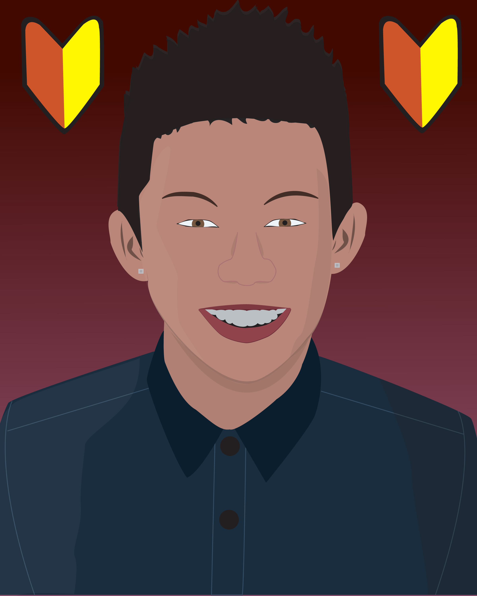About:
For this project we had to create a self portrait of us on Adobe Illustrator. The self portrait project was a project that tested the skills everyone had learned throughout the year and put them to work. After we spent all the time learning layers, pen tool, shortcuts and everything, we had to use them all together in one project. Our whole project revolved around making a self portrait of ourselves in Adobe Illustrator. We took a picture of ourselves in Photo Booth as a base template and traced over it using Illustrator. After getting the main outline done, I had to draw in eyebrows, ears and eyes all freehand, since in the picture the ears weren't very visible, the eyebrows looked bad, and the eyes were not able to be seen in the original photo. I added features like detailed hair, shading to the face, nose, and shirt. I finished it off with adding details to my shirt, adding a background, and re-sizing it into a different document.
Reflection:
I really liked this project because it was one where I felt I did very good on it. I got to use everything I spent half the year learning in Illustrator and make something out of it. I had some trouble in the beginning, finding a picture to use as the base of my self-portrait, but when I found it, the project flowed a lot more smoother. I got the face, neck and the details on the face done very easily compared to the rest. The hair took me a while since my hair was up and didn't have clear definition in the photo, but I liked how it came out. The ears were made free hand since the insides were not possible to replicate. I also had problems drawing out my eyes and eyebrows, as the eyes weren't able to be seen in the photo, and the eyebrows looked much too large when made into Illustrator. I like the shading I ended up creating on my face, under my chin and on my shirt, I felt it came out good. I liked the end product, because it made me feel like the time that I spent making it, went to good use and I made a good end product. Especially when I saw the picture featured in the yearbook, it made me appreciate it even more. Overall I learned how to effectively use pen tool in Illustrator.
Work Ethic
Photoshop Melon Man
Project Date: April 2013
Class Name: Graphics Design 1
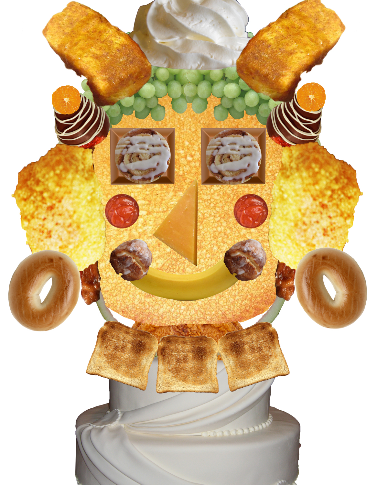About:
For this project we had to get twenty objects of a specific theme of the internet and create a person's face with them. We had to find twenty objects off the internet which we would later individualize and select from the base image and make into a face on a separate document. After we had all twenty objects, we put them into Adobe Photoshop and used a variety of selection options to select the objects, sometimes getting rid of unwanted parts, or just selecting the plain image itself. Once we had all the objects selected, we had to document it on Google Docs where we listed the before image, and then the after image when we selected the object from the base image. We then explained what selection methods we used, making sure that we didn't use the same method for every single object, and varying them up a bit. When all our objects were selected, we put them into a separate document and arranged them to form a face, with features like eyes, ears, hair, mouth and even a neck.
Reflection:
I didn't really enjoy this project, because since I missed one day, I was already behind. While everyone else was already making selections in Photoshop and documenting it, I had to select all of these images off of the internet, spending a class period looking for images that would match my theme of food, and look as if they could be placed into a face. I soon caught up though, making swift selections and putting them into the facial structure shown above. It took lots of time, nonstop working which was kind of hard, and I wish I could have worked on it at home, but I don't own Photoshop so it was not possible. I made all my selections into Google Docs, and finished up the face made of food, and I like the end result that I created. It seemed like this project could have gone a lot smoother for me if I hadn't missed a day of school and wasn't starting off behind. I ended up gaining a better understanding of selecting in Photoshop due to this project.
Writing Skills
Inspiration Writing Assignment
Project Date: April 2013
Class Name: Graphics Design 1
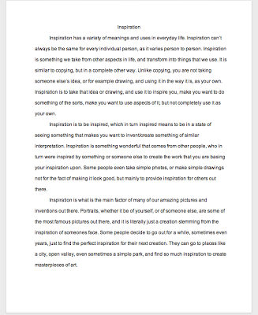About:
For this project we had to write out a one page paper on what Inspiration is to us, and the word's meaning in general. We researched online on the internet about what Inspiration is, the definition of the word, and basically what it means to others. Some people had much more vast different meanings than others, but most of the people had similar meanings. After we had researched it, we had to write a paper of three paragraphs basically putting what we learned. We put these to use, and then found what inspiration meant to us, and wrote about it as well.
Reflection:
I didn't like this assignment at all, because I am not a big fan of writing assignments and don't like to write in general. The researching process was the hardest part, because when you were to search up on google and other websites, you would just find dictionary references, or the actual literal definition of the word. Finding the meaning of this word to other people online, who use inspiration in their everyday, was a difficult task. Although, once found, it became a much easier process and I wrote the paper in a respectable amount of time. Next time I'll try to research more efficiently.
Use of Resources
Photoshop Font Assignment
Project Date: May 2013
Class Name: Graphics Design 1
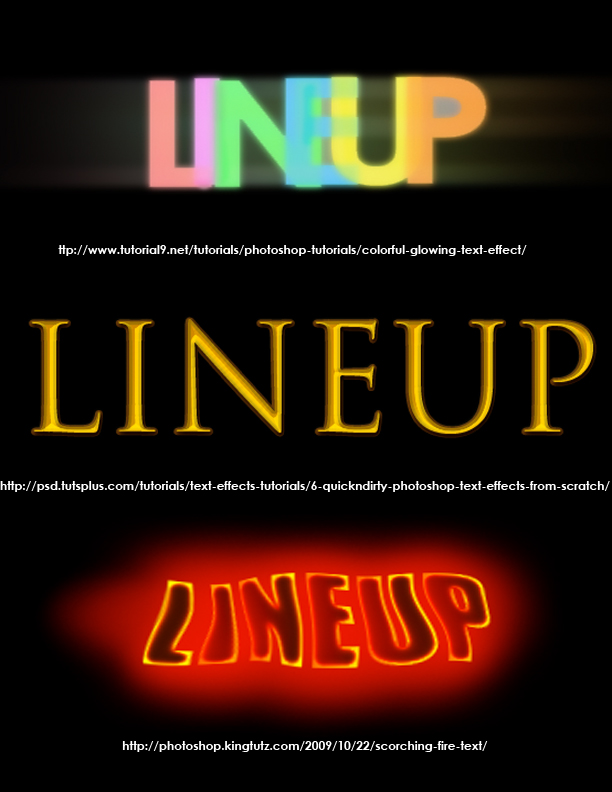About:
For this project, we had to choose a word, then transform the text three different ways. We started off with our word, and put it into Adobe Photoshop. We then had to research online for tutorials of text effects so we could replicate them in Photoshop. After each text effect, we would have to create another text effect, in a different style using the same resources. We repeated this until we had a total of three different text effects, but all the same word and in the same document. We then posted the link from where we got the link onto the document.
Reflection:
This project was easy, but started off rough. I liked it at first because it seemed like a fun and cool idea to do in Photoshop considering the skills we had learned, but I soon learned it was not going to be like I thought. Many of the tutorials I found online required different versions of Photoshop, installing prerequisites, or using paid features which I did not have enough time to do so in the time slot we were given. I had to settle for the few that I could find, choosing the ones that took around half an hour to complete each. The bottom text effect was the hardest for me to complete, as the instructions were very vague. I followed them step-by-step, but the effect given were completely off. I even tried to redo it multiple times to make sure I hadn't missed anything, coming with similar results as above. It made me frustrated, but I had to make due with what I had. Besides that, this project was simple and enjoyable.
Teamwork/Collaboration
Spring PBL
Project Date: March 2013
Class Name: Graphics Design 1
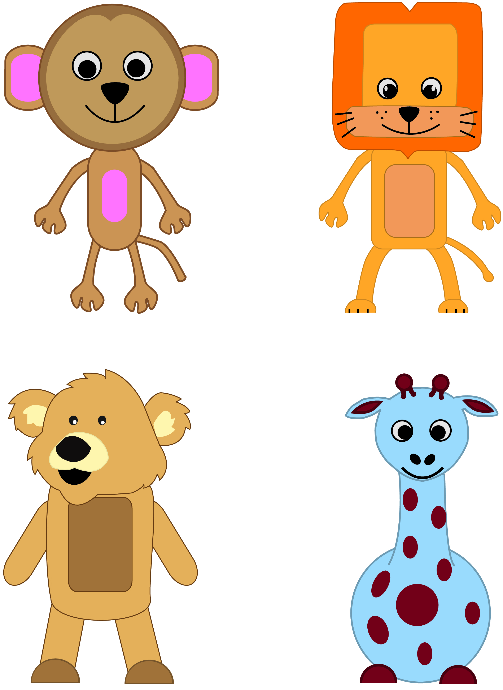About:
For this project, we had to create a children's book for homeless children at a local Kindergarten. We were assigned groups ranging in size of four to six. We were then instructed on creating a children's book for the child, making sure it relates to them as well. For each group, a child was assigned and the groups were given information on their names, dreams, and favorite things. We then incorporated all of these into the book which we created an outline, consisting of our own story and characters, and then put these into an online website that published them in real life called MixBook. After creating our story on paper, we took it to the computer where we had to make our characters, scenes and everything consisted in the book. For my group, we had four characters who were in a very consistent scene, so we only had to create those four characters, the objects they played with, and then put them into the book. We made each character individually, from some sketches done on paper, but mostly freehand drawings made in Adobe Illustrator, and then put into Photoshop where we edited them and saved it into a format that was able to be put into MixBook. We put in the text, our characters, objects, and we had our book finished. We all worked on different parts of the book, which we later explained in our group presentation.
Reflection:
I really liked this project, mostly for the fact that we got to help people that were in need. For once, we got to try and help out people instead of just caring for ourselves like everyone does. We are selfish and usually choose ourselves before caring and helping others, but with this project, it taught me and others how to take some time away from yourself, and spend it towards people who truly deserve it. If it wasn't for the fact that we got to make these for homeless, in-need children at an elementary school, I would have not liked it. This project was very biased. All of the work was mostly put on to the graphics students like myself, as for my class, there was only one of us per group, and only us knew how to use Illustrator, Photoshop and things like this that created almost the whole book. Luckily, my group tried to help as much as they could by providing positive feedback, putting the story into the book, and providing the rough sketches which I scanned and used as a reference. This was my first real team project that was with people I didn't know very well, so I learned how to work with strangers a lot better than before.
Presentation Skills
Logos Project
Project Date: December 2012
Class Name: Graphics Design 1
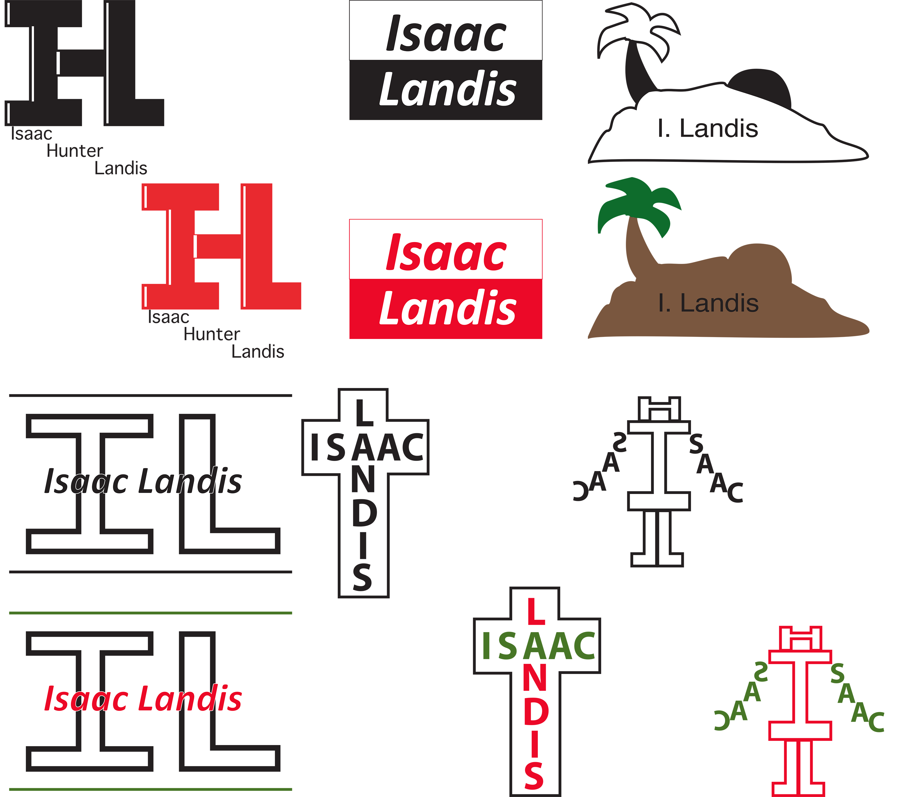About:
For this project we had to create logos for ourselves and then present them to the class. We started off brainstorming, creating a total of thirty-two logos on the front and back of a piece of paper. We then proceeded to scan these and put them into Illustrator so we could choose which six we wanted to create. After we chose the six, we first created them in black and white, and then had to create another version in color, listing all the Pantone colors we used as well. From those six, we narrowed it down even further to the final four logos we liked, and chose to publish those four in black and white and color. For making the logos, of the six I created, one of those were actually new and made on its own, as I felt I really liked the design, but didn't have it included on my original thirty-two brainstorming sheet. I traced out the basic outline of all the logos I liked, of course straightening the edges and cleaning them up to look neater. After we had all six created, we made a Prezi presentation on the whole project. We had to include the original thirty-two logos, the six we chose from it, and the final four we chose in black and white and color. We then presented these Prezi's to the class, and were graded on the Prezi, our presentation, and our logos.
Reflection:
I liked this project, somewhat. It wasn't my favorite, but I didn't completely dislike it. This was a nice project because it helped us find some logos and drift from some creativeness, to professionalism, to a little bit in between both. This project stood out a lot to me, because even if I had not learned Illustrator and used it to create the logos, it was still a good experience and lesson to create logos and a skill that I would plan on using in the real world if I decide to be an entrepreneur involving design like this. The only troubles were finding the sixth logo to use, which I ended up creating from scratch as I felt the rest of the brainstormed logos wouldn't live up to the other five I had put in. This project gave me a taste of how it would be like as a person in the business world with logos. Even though I created a final logo for this project, my current logo ended up being something completely different, but I used the same elements I learned before to help me create the logo.
Work Ethic
Latin American Dish Project
Project Date: December 2012
Class Name: Spanish 1
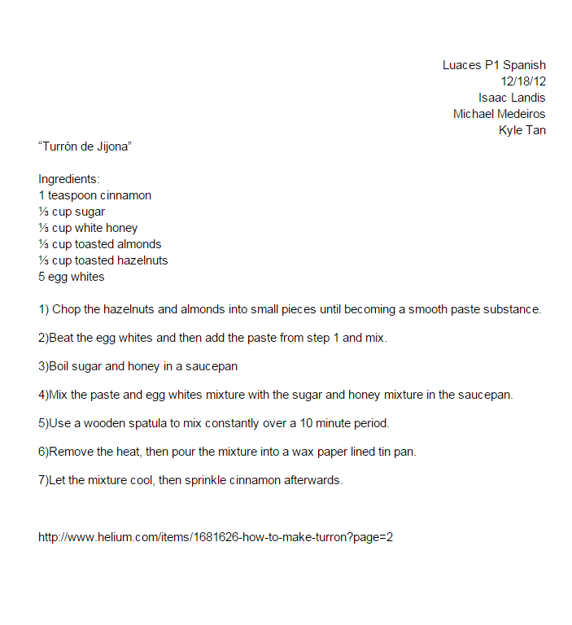About:
For this project we were required to split up into groups of two people. After the groups were formed, we were all assigned to research traditional holiday dishes in Latin America. After researching on these dishes, we then had to select one to create. To make the project more challenging and prevent repetition, no two groups were allowed to have the same dish chosen. We also had to refrain from picking a dish like churros or tacos, because even though people ate them during holiday season, they weren’t traditional holiday dishes on their own. We all had to write out the ingredients and directions for creating the dish along with actually cooking. After cooking, all the groups would bring in their dishes and we would have a giant potluck.
Reflection:
This project was equally fun as it was difficult. My partner and I decided to choose a dish called turron which is a sort of cinnamon nougat consumed during the holidays. This dish has a variety of different ways to cook it, so it took some while to find a recipe that we felt would work well. A problem we ran into would be that my partner wasn’t able to come over to my house to cook the dish with me due to transportation related issues. Because of this problem, we both ended up cooking our own versions of the turron so we had two in total. The dish ended up looking and tasting completely different from how it was supposed to, which was a downside. The upside was that we did our ingredient list and directions perfectly and learned more about Spanish culture. It was a great learning experience when it came to following directions perfectly, and taught me the importance of such.
Writing Skills
Toxicology Essay
Project Date: January 2013
Class Name: Health
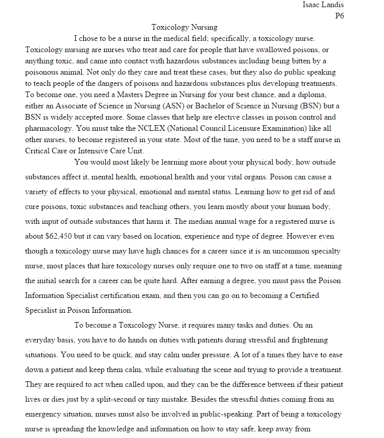About:
This project was assigned to me in my health class as my semester exam. I was required to choose a specific career in the health or medical world and write a paper about it. I was allowed to pick from a large variety of different careers just as long as I accomplished the assignment and wrote the paper well. Once I had the career chosen, I had to imagine myself going into that actual position and talk about why I would. Afterwards, I had to explain what exactly this career does and why they are important in the world. I ended up choosing to be a toxicology nurse, as it interested me the most.
Reflection:
This project may have not been the most fun to me, but looking back on it makes me realize that it did teach me some things. It helped my writing and researching skills overall as it put me on a small time frame to research and write a paper about a topic I had completely no knowledge on. It pressured me to write faster and better which I ended up doing. I gained a newfound knowledge on the medical world and the different kinds of nurses and doctors there are, and helped me realize that I do not want to go into the medical field when I’m older. Overall, it was useful knowledge that benefitted me in the long run.
Content Knowledge
Geometry PBL
Project Date: December 2012
Class Name: Geometry 1 Honors

About:
For this project we had to solve a math sheet, and make a powerpoint presentation about it. My class was small, so it consisted of four groups of four. We were each assigned one math sheet, which we first had to completely solve as a group, then explain how we found these answers. We then used a powerpoint presentation and put all of our information on there, which we then explained everything. After that, we made a physical model of our project, which we created a baseball field using cardboard and paint. Once all of this was done, we then presented the project to the class.
Reflection:
This project was pretty easy once we solved each problem. We worked as groups, and sped up our process by a lot. The powerpoint was easy to create as well, as there were only seven questions we had to solve, and very briefly describe the activity used in the problems. We just put the origin of baseball, and then the rules on how to play the game. We presented this project to the class, which was easy and went smoothly. Our physical model was difficult, as we had to cut cardboard into an even square in an equal ratio to the baseball field in the problem. Afterward, we painted it and glued the bases on. I liked this project, as it was a very fun and nice break from the repetitive math problems.
Use of Resources
Music To My Ears Sketchbook
Project Date: March 2013
Class Name: Graphics Design 1
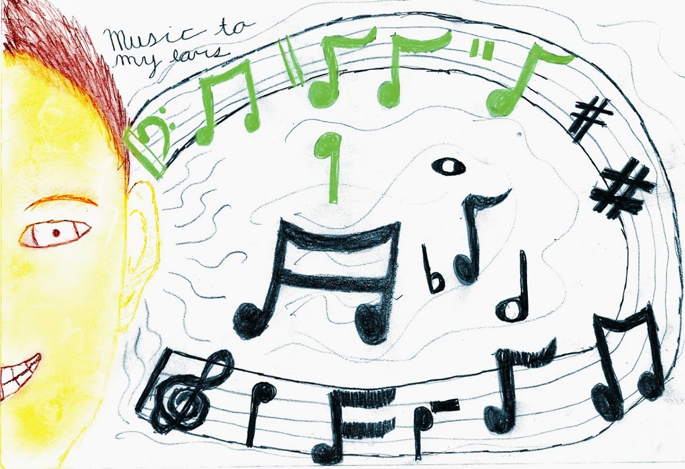About:
For this project I had to draw a literal meaning of "Music To My Ears". We had the choice of a wide selection of Sketchbook prompts we could have drew and turned in for a grade. I chose the prompt where we drew "Music To My Ears" and had to draw that literal meaning. I started off drawing my face, adding features like hair, eyes, mouth and of course, my ear. I then proceeded to draw musical notes on a flowing sheet music as if the music notes and actual music were flowing into my actual ear. I then drew lines signifying that there is noise going to my ear, and drew a variety of different notes floating around. I ended it by writing out the prompt in cursive in the top left corner.
Reflection:
I chose the prompt where we drew "Music To My Ears" because it seemed like something fun to draw, especially since I've never actually drew my face before, and music is such a huge impact in my life. I liked this sketchbook assignment, and it was one of the few which I had lots of fun creating, as it was something I didn't feel was really a prompt, but more of a drawing I wanted to make. I can tell when I am able to make a complicated shape such as my face in one try, that I enjoy the drawing and did not stress over it. The music notes related to me since I love music and as it was coming to my ears with the smile on my face, it made me feel like it was actually me. The drawing made me happy and actually enjoy drawing it.
Presentation Skills
Resilience Spoken Word
Project Date: October 2012
Class Name: English 9 Honors
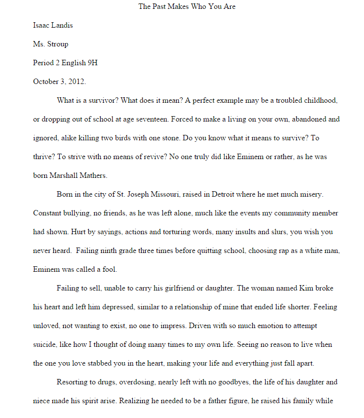About:
This was one of the first projects of freshman year and was a solo one as well. Each person in class had to create a spoken word poem on resilience, while at the same time relating it to a person who portrays resilience. In the poem we had to relate the resilience to our person we chose and ourselves to make it more personal. Once we had the poem finished, we had to present them in front of the class. I chose to base my spoken word on Eminem and relate it in some ways to myself. We were allowed to read the poem without memorizing it, but we needed to try to not just directly read from the poem without making contact with the audience.
Reflection:
This was the first presentation I had freshman year, and all of high school as a whole. Before this project, I had severe public speaking anxiety to the extent of hyperventilating and crying. But this project really helped me move past this obstacle and develop my speaking skills. I spent a lot of time and effort into my poem and practiced presenting it over and over, just to make sure I’d be okay. When it came to the actual presentation, I was severely nervous, but eventually got over it and finished strongly. Even though this presentation was very nerve wracking and scary to me, I enjoyed it. I really liked spoken word poems so it was an interesting assignment, and it also made my presentation skills a lot stronger. I felt it was the most beneficial presentation I’ve had all of high school.
Teamwork/Collaboration
Hercules Powerpoint
Project Date: May 2013
Class Name: English 9 Honors
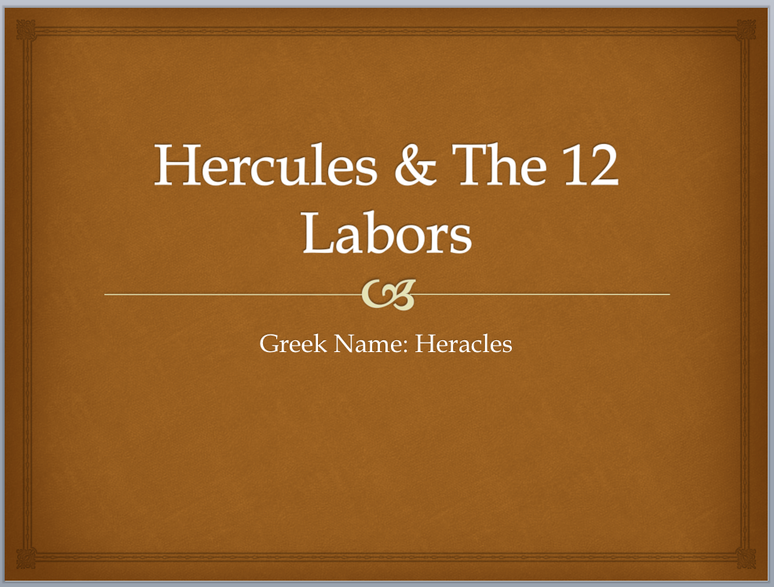About:
For this project we had to create a powerpoint presentation, a map, and present all of them to the class. We were put into groups of about seven people, and then assigned a hero of Greek mythology. I was assigned the hero Hercules, and his twelve labors. After creating a fifteen slide presentation not including the works cited, hero's journey and title page, we presented it to the class. We plotted out the hero's journey and the hero's story onto the map, which we drew all of the places they visited. After the map and powerpoint were created, we had to present to the class, or take notes if we were watching a presentation. Then we proceeded to assign points to every person in the group, giving everyone the same grade, or raising or lowering some people's.
Reflection:
This project was interesting as the story of Hercules and the other Greek gods was a really nice and interesting experiment, but when it came down to making the actual presentation, it was much harder. I had to produce the whole powerpoint slideshow by myself, spending a long time staying up working on it. Even worse, my flash drive broke halfway through, and I had to start over again. The majority of the powerpoint was spent making the works cited and finding pictures, plus formatting. When it came down to the presentation, I knew everything by heart so my part became much easier. Afterwards, we all were awarded eighty-eight points out of 100, but since I did all the work on the powerpoint, they raised mine to a ninety points, and subtracted from other team members.